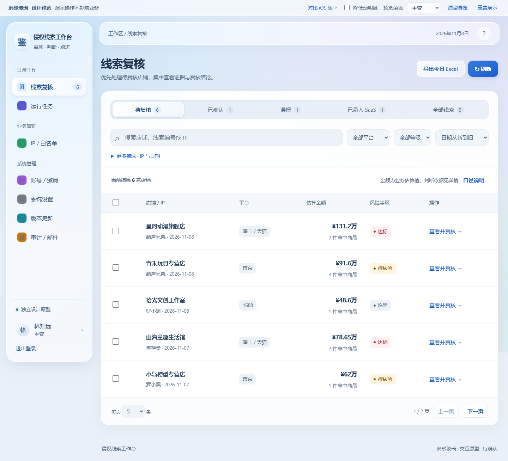
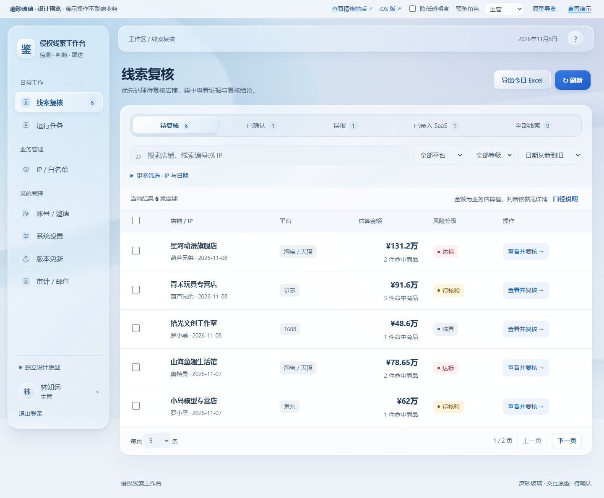

- 导航图标统一为淡蓝玻璃底，移除混杂的彩色块。
- 筛选与结果区间距收紧；表格使用稳定行距和统一列内对齐。
- 金额采用等宽数字，复核入口采用统一按钮样式。
- 手机卡片将选择框放在右上角，减少重复字段标签，保持原内容和入口。
- 复核详情的证据数据分组呈现，人工复核区层级更清楚。
这份对比只用于原型确认，不代表已替换正式前端。
保留玻璃拟态、业务内容与操作路径。以下为同一组演示数据、相同屏幕尺寸的 Edge 实拍。选择“本轮材质对比”可直接比较透光与边缘厚度的变化。


这份对比只用于原型确认，不代表已替换正式前端。